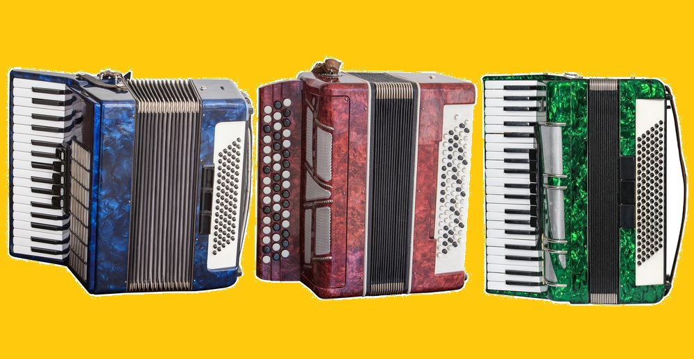
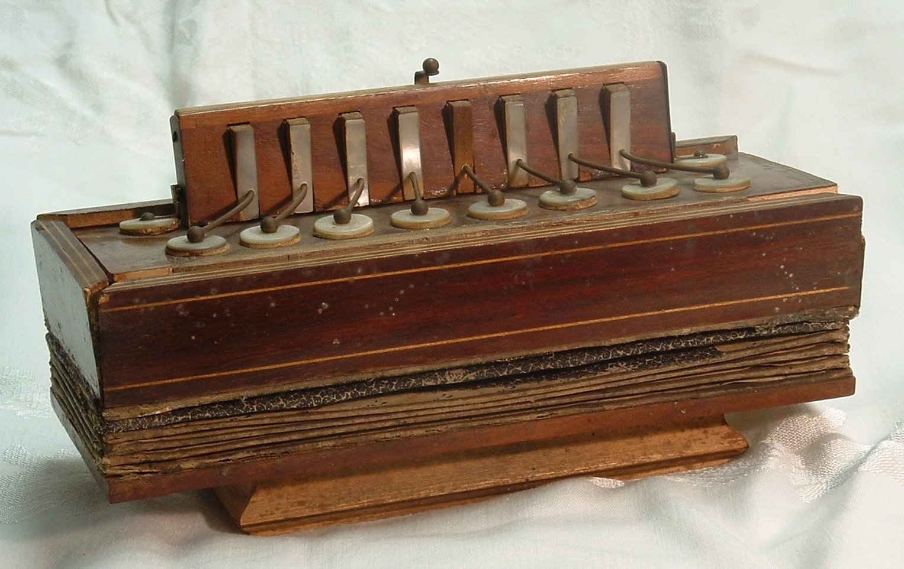
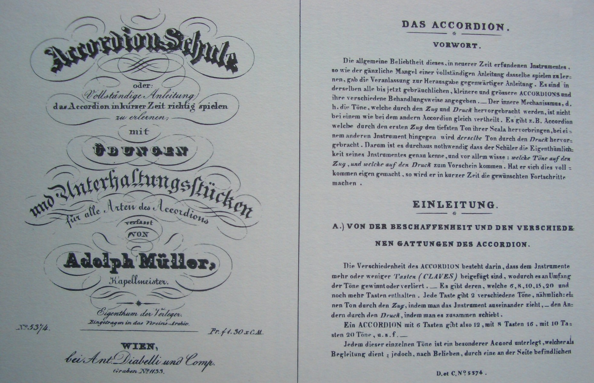

Acordeonul
Istoria Descriere Tipuri

Acordeonul (din germanul „Akkordeon” din secolul al XIX-lea, derivat din „Akkord” – „acord muzical, armonie a sunetelor”) este o familie de instrumente muzicale în formă de cutie, de tip aerofon cu ancii libere, acționate prin burduf (produc sunet când aerul trece printr-o ancie fixată într-un cadru). Caracteristica esențială a acordeonului este combinarea într-un singur instrument a unei secțiuni melodice, numită și „diskant”, aflată de obicei pe claviatura din partea dreaptă, cu o funcție de acompaniament sau basso continuo pe partea stângă. Muzicianul cântă de regulă melodia pe butoane sau clape aflate în partea dreaptă (denumită claviatură sau uneori „manual”), iar acompaniamentul pe butoane de bas sau acorduri predefinite în partea stângă. O persoană care cântă la acordeon este numită acordeonist.
Acordeonul face parte din familia aerofonelor cu ancii libere. Alte instrumente din această familie includ concertina, muzicuța și bandoneonul. Concertina și bandoneonul nu dispun de dualitatea melodie–acompaniament. Harmoneonul este, de asemenea, înrudit și, deși are dualismul diskant vs. melodie, încearcă să îl atenueze. Harmoniumul și orga cu ancii americană fac parte din aceeași familie, dar sunt în general mai mari decât acordeonul și sunt așezate pe o suprafață sau pe podea.
Acordeonul este cântat prin comprimarea sau extinderea burdufului în timp ce se apasă butoane sau clape, cauzând deschiderea paletelor care permit aerului să treacă peste lamele de alamă sau oțel (numite ancii). Acestea vibrează pentru a produce sunet în interiorul carcasei. Supape pe ancile opuse ale fiecărei note sunt utilizate pentru a intensifica sunetul produs, fără scurgeri de aer.
Acordeonul s-a răspândit pe scară largă în lume datorită valurilor de migrație din Europa spre Americi și alte regiuni. În unele țări (de exemplu: Argentina, Brazilia, Columbia, Republica Dominicană, Mexic și Panama), este utilizat în muzica populară (de exemplu: Chamamé în Argentina; gaucho, forró și sertanejo în Brazilia; vallenato în Columbia; merengue în Republica Dominicană; și norteño în Mexic), în timp ce în alte regiuni (precum Europa, America de Nord și alte țări din America de Sud) este folosit mai ales în muzica de dans pop și folk.
În Europa și America de Nord, unele formații de muzică pop folosesc de asemenea acordeonul. În plus, acordeonul este utilizat în muzica cajun, zydeco, jazz, klezmer, și în interpretările solo sau orchestrale ale muzicii clasice. Multe conservatoare din Europa au departamente dedicate acordeonului clasic. Cea mai veche denumire pentru această familie de instrumente este harmonika, din grecescul „harmonikos”, care înseamnă „armonic, muzical”. Astăzi, sunt mai comune denumirile derivate din cuvântul „acordeon”, referindu-se la tipul de instrument patentat de Cyrill Demian, care includea „acorduri cuplate automat pe partea de bas”.
Istoria acordeonului

Forma de bază a acordeonului se crede că a fost inventată în Berlin, în 1822, de Christian Friedrich Ludwig Buschmann, deși în 2006 a fost descoperit un instrument ce pare a fi construit anterior.
Istoria timpurie a acordeonului în Rusia este slab documentată. Cu toate acestea, conform cercetătorilor ruși, cele mai vechi acordeoane simple cunoscute au fost fabricate în Tula, Rusia, de Ivan Sizov și Timofey Vorontsov, în jurul anului 1830, după ce au primit un acordeon din Germania. Până la sfârșitul anilor 1840, instrumentul era deja larg răspândit; fabricile celor doi meșteri produceau împreună 10.000 de instrumente pe an. Până în 1866, se produceau anual peste 50.000 de instrumente în Tula și satele vecine, iar până în 1874 producția anuală a depășit 700.000. Până în anii 1860, și guvernoratele Novgorod, Vyatka și Saratov aveau o producție semnificativă de acordeoane. În anii 1880, lista includea și Oryol, Ryazan, Moscova, Tver, Vologda, Kostroma, Nizhny Novgorod și Simbirsk, iar multe dintre aceste locuri au dezvoltat propriile varietăți de instrument.
Acordeonul este una dintre mai multe invenții europene ale începutului de secol XIX care folosesc ancii libere acționate de burduf. Un instrument numit „acordeon” a fost patentat pentru prima dată în 1829 de Cyrill Demian în Viena. Instrumentul său semăna puțin cu cele moderne, având doar o claviatură pentru mâna stângă, mâna dreaptă acționând doar burduful. O caracteristică cheie pentru care Demian a solicitat brevetul era posibilitatea de a suna un acord întreg apăsând o singură clapă. Instrumentul său putea produce două acorduri cu aceeași clapă, în funcție de direcția burdufului (acțiune bisonorică). Brevetul acoperea un instrument de acompaniament, cântat cu mâna stângă – opus felului în care erau cântate armonicile manuale cromatice.
Acordeonul a fost introdus din Germania în Marea Britanie în jurul anului 1828. A fost menționat în ziarul The Times în 1831 ca fiind nou pentru publicul britanic, deși nu a fost primit favorabil inițial, a devenit în scurt timp popular. De asemenea, a devenit popular în rândul newyorkezilor până la mijlocul anilor 1840.
După invenția lui Demian, au apărut alte tipuri de acordeoane, unele având doar claviatura pentru mâna dreaptă. Inventatorul englez Charles Wheatstone a fost cel care a adus împreună claviatura și acordurile într-un singur instrument – concertina, patentată în 1844, care permitea și acordarea simplă a anciilor.
Instrumentul flutina al lui Jeune seamănă cu concertina lui Wheatstone ca structură internă și culoare a sunetului, dar completează funcționalitatea acordeonului lui Demian. Flutina este un instrument melodic bisonoric operat cu mâna dreaptă. Combinate, cele două instrumente seamănă mult cu acordeoanele diatonice actuale.
Inovațiile au continuat până astăzi, incluzând noi sisteme de butoane sau clape, registre variate, comutatoare de ton, construcții interne mai durabile și chiar componente electronice – microfoane, controale de volum și ton, conectivitate MIDI etc.

Acordeon diatonic bisonor cu 8 clape (~1830)

Primele pagini din cartea pentru acordeon a lui Adolf Müller
O descriere a instrumentului

Mecanismul bașilor, ascuns în interiorul instrumentului
Acordeoanele vin într-o varietate largă de configurații. Ce e ușor de realizat pe un tip poate fi dificil sau imposibil pe altul.
Cea mai evidentă diferență este partea dreaptă: acordeoanele cu claviatură de tip pian și cele cu butoane. Butoanele pot fi organizate cromatic sau diatonic.
Acordeoanele pot fi bisonorice (emit note diferite în funcție de direcția burdufului) sau unisonorice (emit aceeași notă în ambele direcții). Acordeoanele cu clape de pian sunt unisonorice, la fel și cele cu butoane cromatice. Cele diatonice sunt de regulă bisonorice.
Mărimea nu este standardizată: pot avea de la 8 la peste 140 de butoane de bas, registre multiple și voci (voicings) diferite.
Burduful este partea cel mai ușor de recunoscut a instrumentului și principalul mijloc de articulare. Este comparabil cu arcușul la vioară sau respirația unui cântăreț. Este alcătuit din straturi plisate de pânză și carton, cu adaosuri de piele și metal. Controlează volumul, expresivitatea și efecte sonore precum scuturatul burdufului sau vuietul aerului.
Diferitele tipuri de acordeon
În continuare sunt prezentate variații în sistemele de claviaturi ale acordeoanelor:
Sisteme pentru mâna dreaptă:
- Acordeoane cromatice cu butoane (inclusiv varianta rusească – bayan): dispun de butoane dispuse cromatic.
- Acordeoane diatonice cu butoane: concepute pentru scale diatonice; des utilizate în muzica populară.
- Acordeoane cu clape de pian: similar unei claviaturi de pian.
- Acordeoane bass și piccolo: foarte rare, doar pentru linia de bas sau registrul înalt.
- Acordeoane 6-plus-6 (Jankó): trei rânduri de butoane identice, ușurând transpunerea tonală.
Sisteme pentru mâna stângă:
- Sistemul StradellaSistemul Stradella: cel mai comun, dispus în cercul cvintelor, cu butoane pentru note de bas și acorduri presetate (major, minor, septimă, diminuat).
- Sistemul belgian: similar Stradella, dar inversat și cu spațiu mai mare între butoane.
- Sisteme de bass liber (free-bass): permit linii de bas complexe și formarea liberă a acordurilor – preferate în jazz și muzica clasică.
- Acordeoane cu două claviaturi de pian (Luttbeg): clape pe ambele părți.
- Sistemul Chiovarelli Jazz (2021): acorduri bicorde pentru muzică jazz, dar utile și în alte genuri.

Acordeon cu claviatură de pian

Acordeon cu claviatură Jankó